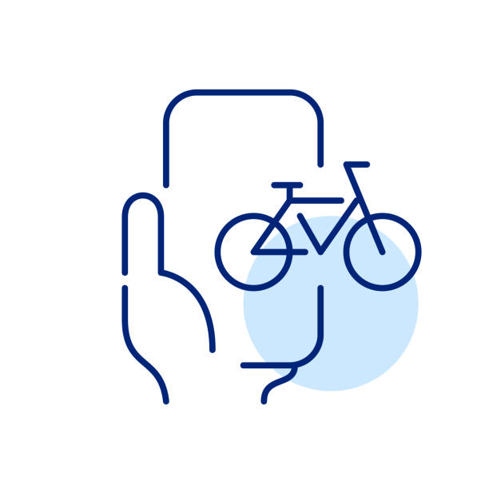
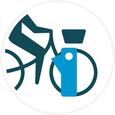

How to rent a bicycle?
1. Find a Bike
2. Cycle
3. Return the Bike



- Log in and choose a dublinbikes subscription
- Check and select your bike
- Release a bike
- No bike at the station?
- The first 30 minutes are free
- Rules of the road
- Tips and best practices
- Locking the bike
- Choose a station
- Park a bike at a station
- No stands available to park at the station?
- Write a review
Bicycle Safety Tips
- Always wear a helmet for protection.
- Follow traffic rules and signals.
- Use hand signals when turning.
- Stay in designated cycling lanes.
- Be visible: wear bright clothes and use bike lights at night.
- Check your bike before riding (brakes, tires, lights).
- Avoid using headphones while cycling.
- Be aware of pedestrians and other cyclists.
- Lock your bike properly when not in use.